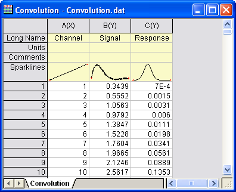
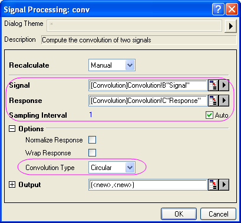
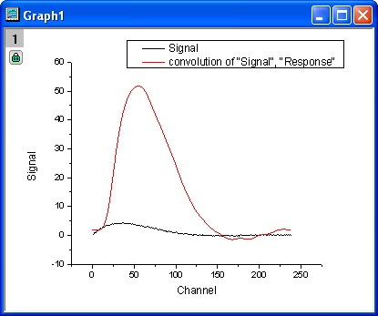

Faltung
Convolution
Zusammenfassung
Die Faltung wird weithin in der Signalverarbeitung verwendet. Origin verwendet das Faltungstheorem, das die Fourier-Transformation beinhaltet, um die Faltung zu berechnen.
Was Sie lernen werden
In diesem Tutorial lernen Sie, wie Sie eine Faltung in Origin durchführen.
Schritte
- Öffnen Sie eine neue Arbeitsmappe.
- Importieren Sie die Daten <Origin-Verzeichnis>\Samples\Signal Processing\Convolution.dat.
- 
- Markieren Sie Spalte B und C und wählen Sie im Menü Analyse: Signalverarbeitung: Faltung. Der Dialog der Signalverarbeitung: conv wird geöffnet. In dem Dialog ist Spalte B automatisch als Signal gesetzt und Spalte C als Antwort. Das Abtastintervall wird entsprechend der mit dem Eingabesignal verbundenen X-Spalte festgelegt.
- Erweitern Sie den Zweig Optionen und setzen Sie den Faltungstyp auf Zirkulär, so dass die Daten innerhalb des Bereichs für die Daten außerhalb des Bereichs wiederholt werden, aber nicht mit Nullen aufgefüllt.
- 
- Klicken Sie auf OK, um das Ergebnis auszugeben.
- Markieren Sie in dem Arbeitsblatt Spalte B und E (drücken Sie die Strg-Taste, um nicht nebeneinander liegende Spalten auszuwählen) und wählen Sie im Menü Zeichnen: Linie: Liniendiagramm, um ein Diagramm mit dem Eingabe- und Ausgabesignal zu erstellen.
- 